title: Architettura degli Elaboratori date: Settembre 2021 author: Giovanni Spadaccini ---
[TOC]
Nell'informatica si usano i principi di astrazione e implementazione, per diminuire la complessità, l'astrazione grazie a delle interfaccia accede alle implementazione (che utilizzando l'astrazione non bisogna più sapere com'è costruita)
astrazione: Si presenta la soluzione ad un problema concentrandosi solo su alcuni aspetti “rilevanti” (ad esempio, come ottenere la soluzione componendo soluzioni di problemi più semplici)
Implementazione: Si realizza la soluzione aggiungendo gli aspetti astratti nella prima fase (ad esempio, si mostra come si possono risolvere i problemi più semplici)
questa implementazione e astrazione è utilizzata per creare macchine multilivello
nella tipica struttura a livelli, ogni livello superiore esegue il codice su una macchina virtuale inferiore eseguendo: - un interprete che viene eseguito eseguito su una macchina inferiore - una traduzione nel linguaggio di una macchina inferiore
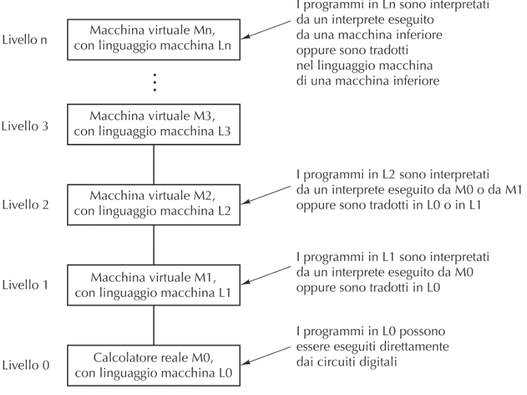
Tipico elaboratore a 6 livelli 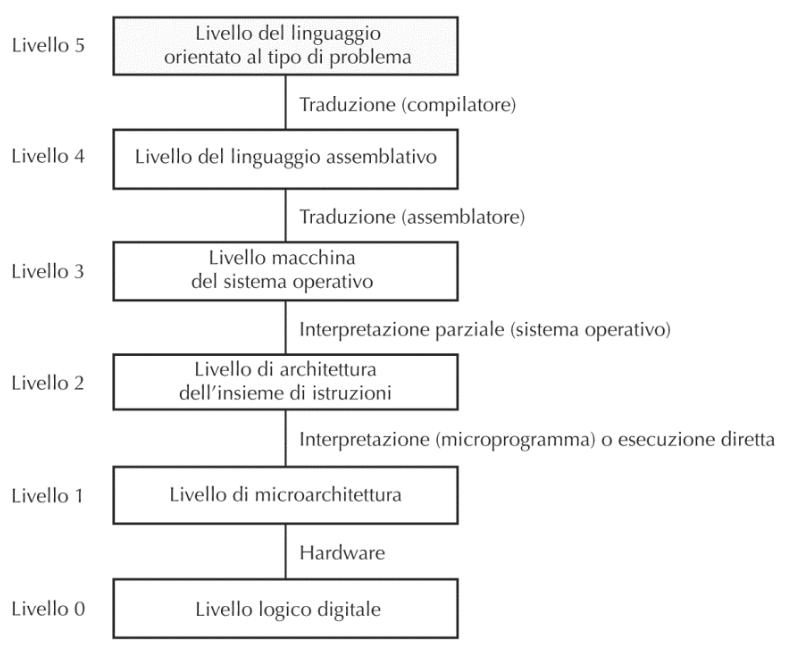
porte logiche:
circuiti hanno tutti due input
Microarchitettura :
governa il flusso dei dati fra i vari componenti del livello logico digitale (può essere hardware o software)
Istruzioni macchina :
insieme di istruzioni eseguibili dalla microarchietettura
Livelli ibridi perchè non sono rigidamente separati
sistema operativo:
fornisce la gestione di risorse ed esecuzione dei processi
linguaggio assembly:
permette di programmare i livelli sottostanti
Linguaggi di programmazione ad alto livello:
linguaggi che vengono compilati o interpretati, in linguaggio assembly
sono macchine multi-livello, e si utilizzano le astrazioni, e ogni volta vengono eseguiti o tradotti in nella astrazione sottostante
non sono per l'esame
il computing non è solo nel computer ma in molti altri oggetti
MIPS: milioni di operazioni al secondo
MFLOPS: miliardi di operazioni a virgola mobile
"bus oriented": un bus è un insieme di connessioni elettriche per collegare i vari componenti
IL bus a differenza dello schema di van Neumann, non ha una connessione punto a punto ma tutti i componenti sono collegati al bus
Una altra novità è che con von Neumann la memoria non solo per i dati ma anche per i programmi
La cpu e la memoria utilizzano i bus dati e il bus indirizzi per scambiarsi le informazioni

i dispositivi si collegano al bus tramite controller, alcuni controller accedono direttamentente alla memoria, e al termine della scrittura/lettura invia un segnale alla cpu
il bus collega anche le periferiche, l'accesso al bus condivisio viene gestito da un "albitro" del bus
i nuovi dispositivi, possono trasferire i dati dalla memoria ad un altro dispositivo senza passare dalla cpu (che da l'ordine solo da che indirizzo a quale copiare)

la cpu è il cervello della macchina che esegue i calcoli
la cpu è composta da: - unita di controllo:legge e interpreta le istruzioni - alu: esegue le operazioni - registri: che sono delle celle di memoria per i dati necessari al funzionamento
[NOTA] la memoria centrale è più lenta del processore, e come primo accorgimento si utilizzano i registri per tenere i dati più utilizzati
Registri Speciali(non "general propose" di uso generale): - Program Counter:indica la prossima istruzione - Instruction Register: contiene l'istruzione che stiamo eseguendo (prende tutta l'istruzione per esempio prende tutto add ax,bx) - Memory registers:si usano per interagire con la memoria - Memory address Register: su questo si mette l'indirizzo da leggere o scrivere
- Memory data Register: qui si scrive li dato da scrivere o si legge il dato appena letto - Program Status Word: indica informazioni sull'andamento dell'ultima istruzione eseguita (c'è stata un'overflow, l'ultima operazione è risultata zero)
Esempio pratico dell'esecuzione di un istruzione
1. il contenuto di Program counter viene messo su Memoriy address Register e viene letta l'istruzione 2. la memoria copia il contenuto della cella all'indirizzo del Memory address register su il Memory Data Register 3. il contenuto di Memory Data Register viene copiato su Instruction Register 4. l'istruzione passa all'ALU 5. se ci sono operatori da prelevare in memoria si collegano a i registri (utilizzando sempre il Memory Address Register e il Memory Data Register) 6. termina l'esecuzione e il risultato va sul registro di destinazione (aggiorna il Program Status Word), e se bisogna scrivere la memoria scrive in memoria il valore calcolato si sposta sulla memoria utilizzando sempre il MDR e il MAR 7. si torna al punto 1 dopo avere aggiornato il valore di Program Counter
[NOTA] il program counter viene incrementato in modo diverso dal tipo di architettura, alcuni sistemi hanno una dimensione fissa dell'istruzione e a quel punto incrementa di una costante, in altri casi quanto si hanno diversa lunghezza nelle istruzioni un circuito nel processore sa di quanto incrementare in base all'istruzione eseguita
il ciclo di esecuzione può essere schematizzato anche come FDE: 1. Fetch caricamento della memoria di un'istruzione (punti 1-2 dell'esempio) 2. Decode identificazione del tipo di operazione da eseguire (punto 3) 3. Execute effettuazione delle operazioni corrispondenti all'istruzione (punti 4-5-6)
l'unita di controllo gestisce la memoria e l'alu, e interpreta le istruzioni
i tipi di set di istruzioni possono essere: - CISC: Complex Instruction Set Computer, e quindi utilizzare microprogrammazione e un processore più complesso - RISC: Reduced Instruction Set Computer, istruzioni più semplici possono essere eseguite più velocemente e potendo evitare la microprogrammazione
di solito in una cpu CISC c'è un collegamento diretto tra il MDR e l'alu senza passare dai registri, mentre nei RISC non c'è il collegamento diretto
alu esegue le operazioni
Data Path: intendiamo la parte della CPU comprende ALU, i suoi input ed i suoi output(registri)
nel calcolatore c'è un segnale che si chiama clock; è un segnale regolare che determina il tempo di Data Pah (un operazione può utilizzare anche più cicli di clock)
Velocità CPU: - il ciclo del clock (stessa durata ciclo di data pah) può essere calcolato $\frac{1}{F}$ (dove F è la frequenza) - durata di un istruzione può essere calcolata n*durata ciclo di path (n varia da istruzione a istruzione)
Metodi per velocizzare la cpu: - pipelining:Un modo per migliorare le prestazioni di un processore è eseguire contemporaneamente più cicli FDE, usando per ognuno di essi parti diversi della CPU - Multicore:In alcuni casi, all’interno della medesima CPU si replicano unità di controllo e ALU per esecuzioni di attività in parallelo - Parallelismo:com molte cpu che lavorano in coordinamento - SIMD i processori eseguino la stessa istruzione su dati diversi, possiamo utilizzare il SIMD (così utilizza più alu ma con con una sola control unit, si torova spesso nelle GPU) (cambia il numero di alu e di registri) - MIMD: sono più precessori che condividono la stessa memoria senza eseguire necessariamente la stessa istruzione - multicomputer: molti processi non condividono una memoria e che comunicano scambiandosi messaggi, così moltissime cpu possono cooperare
è l'implementazione di una catena di montaggio dentro la cpu
viene divisa l'esecuzione di un operazione in più step così mentre si sta eseguendo un operazione allo stato 2 nello stadio 1 si può incominciare un altra operazione
essendo che suddividiamo l'operazioni in vari passi, possiamo diminuire il ciclo di clock per ogni di questi stage

in ordine di velocità:

le memorie si organizzano in celle (ogni cella contiene un bit)

word è uguale al blocco con il quale il calcolatore lavora (quanti bit ha la cpu), per memorizzare le word in un byte si può memorizzare in big endian o end endian

la cache è una memoria volatile poco capiente ma molto veloce
se la cpu accedesse la ram in indirizzi casuale al cache non servirebbe, molti programmi però utilizzano pezzi di memoria vicini e in questi casi la cache velocizza le operazioni.
tempo medio d'accesso = c + (1 − h)m
spiegazione
quantificare l'impatto della cache: - c sia il tempo di accesso alla cache - m sia il tempo di accesso alla memoria centrale - h sia l'hit-radio, la frazione di riferimenti che può essere soddisfatta dalla cache (una frazione che ci indica quante volte la cache riesce a non far accedere alla memoria)
hard disk (HD): è un dispositivo elettro-meccanico per la conservazione di informazioni sotto forma magnetica

si tratta di dispositivi completamente elettronici senza parte in movimento (consumano meno energia e maggiore resistenza agli urti rispetto agli hard disck )
RAID: tecnica che utilizza più dischi in parallelo per aumentare le prestazioni e diminuire il data lost
Più veloce perché si leggono più dati contemporaneamente, più affidabile se si replicano i dati e si aggiungono bit di controllo per verificare/correggere errori
Dischi Ottici: dischi in cui un laser legge e scrive le informazioni
vengono scritti e letti tramite fori (pit) e con delle zone piane (lend)
ci sono i dispositivi di input e output (stampanti, tastiera, schermo,mouse, schede di rete, etc..)
monitor: deve essere molto veloce e ha una gran quantità di dati, ogni pixel richiede 32bit (in uno schermo normale 1920x1080 66 milioni di bit)
Negli anni si sono sviluppati processori solo per la gestione dello schermo (GPU)
Porte Logiche:hanno 1/2 ingressi (che possono essere scambiati) e un uscita
Circuiti combinatori :
Sono circuiti che con lo stesso set di input input producono lo stesso output
Circuiti Sequenziali :
Circuiti che cambiano l'output in base agli input ricevuti in passato
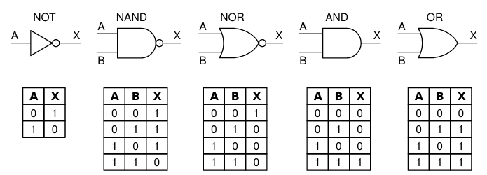
La porta logica più inportante che utilizziermo è l'NAND, perchè da questa porta riusciremo a costriuire tutte le porte logiche.
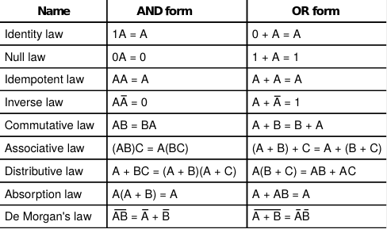
Un circuito non si può descrivere anche con una tabella di verità
tabella di veritàmappa tutti gli input con i risultato l'output (ha 2n mintermini/righe)
Un mintermine su n variabili è l’AND fra n letterali corrispondenti alle n variabili
Ogni combinazione delle variabili di una funzione booleana ha un corrispondente mintermine (vero per quella specifica combinazione) ogni tabella di verità ha 2nmintermini dove n è il numero di letterali.
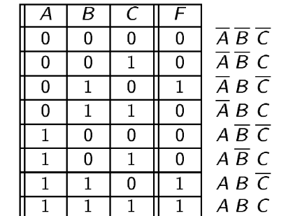
la forma canonica è una funzione booleana, che si ricava concatenando con l'or i mintermini per cui la funzione è verificata
Per esempio la forma canonica della funzione definita nell'immagine sopra è : ĀBC̄ + ABC̄ + ABC
Creaiamo dei circuiti che rappresentano fisicamente le nostre funzioni booleane. Per creare tutte le nostre funzioni booleane possiamo partire dalla porta NAND, infatti con questa porta si riescono ad implementare tutte le porte logiche (AND,OR e NOT). Inoltre la porta NAND è molto facile da implementare fisicamente.

Xor:è vero solo se i due input sono diversi
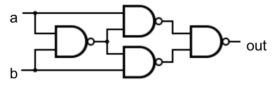
Multiplexer: ha 3 input, il terzo input decide quale dei due input far passare
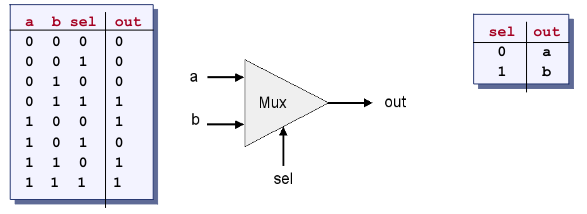
es
fare la tabella di verità su $A+ \overline{ (B+C) } B$
$A+ \overline{ (B+C) } B$
A + B̄C̄B
A + 0
sono un modo per rappresentre le funzioni booleane, e restituisce una funzione che è unguale o più piccola di quella canonica
mappa per due variabili
| B A | 0 | 1 |
|---|---|---|
| 0 | ||
| 1 |
mappa per tre variabili (notare quando ci sono più variabili ordiniamo i numeri con il gray code)
| B AC | 00 | 01 | 11 | 10 |
|---|---|---|---|---|
| 0 | ||||
| 1 |
mappa con quattro variabili
| DB AC | 00 | 01 | 11 | 10 |
|---|---|---|---|---|
| 00 | ||||
| 01 | ||||
| 11 | ||||
| 10 |
possiamo racchiudere gli uno nella tabella in rettangoli con base e altezza che sono potenze di 2.
Copertura minimale:è una delle forme più piccole - raggruppamenti che non sono contenuti in potenziali raggruppamenti più grandi - raggruppamenti che contengono almeno una cella che non appare anche in altri raggruppamenti della copertura
L’espressione booleana corrispondente ad una copertura minimale risulta essere un’espressione del tipo somma di prodotti di letterali (in altri termini OR fra AND di letterali) con un numero minimale di addendi.
I circuiti sequenziali sono circuiti il cui risultato cambia in base agli input presi in passato

creiamo la tabella di verità - Se S=1, R=0 allora Q=1, Q̄=0 - Se S=0, R=1 allora Q=0, Q̄=1 - Se S=1, R=1 allora Q=0, Q̄=0 - Se S=0, R=0 allora ... non si sa!
Essendo che nel caso S=0,R=0 gli output rimangono invariati. Ma se il circuito come primo input ha S=0,S=0 allora non si sa se Q è 0 o 1.

Di solito si utilizza un clock per fare in modo che il Latch non cambi valore in momenti non opportuni.

Questo latch D, fa in modo che non possiamo mai avere la situazione sa S che R settati.

il circuito attaccato al clock sfrutta il tempo che fisico che il not ci mette a cambiare valore,così facendo il segnale risultante arriva per un brevissimo istante quando il clock è settato a 1.
tabella di verità
| in | load | cl | out[n] |
|---|---|---|---|
| 0 | 0 | FS | out[n-1] |
| 1 | 0 | FS | out[n-1] |
| 0 | 1 | FS | 0 |
| 1 | 1 | FS | 1 |
molte volte per realizzare un circuito sequenziale viene utilizzato un circuito combinatorio, che va in un flip-flop per poi tornare nell'input del circuito combinatorio

TODO: da finire
if reset(t-1) then out(t)=0
else if load(t-1) then out(t)=in(t-1)
else if inc(t-1) then out(t)=out(t-1)+1
else out(t)=out(t-1)Una memoria con n locazioni da w-bit, può essere realizzata con n “w-bit register” controllati da uno specifico circuito, che indica da quale di questi registri deve essere letto.
(utilizzeremo un demultiplexer per il load e un multiplexer per l'out)
TODO: aggiungere immagine
I calcolatori elaborano molti tipi di informazione come testi, immagini ,suoni ,numeri etc.. Nonostante ciò le memorie dati possono contenere solo valori binari.
Partiamo dai numeri naturali positivi che vengono rappresentati semplicemente in base 2.
Modulo e segno si una l'ultimo bit come segno
es usando 8 bit: 00000110=6, 10000110=-6
Complemento a 1: il bit più a sx indica il segno, ma se il numero è negativo il modulo viene complementato
Es usando 8 bit: 00000110=6, 11111001=-6
Complemento a 2: come per il complemento a 1, ma se il numero è negativo dopo il complemento si aggiunge 1
Esempio
usando 8 bit: 00000110=6, 11111010=-6
con questo metodo è più facile fare le addizioni perchè riusciamo a farle con lo stesso metodo
con il complemento a 2 possiamo avere un range da [2k − 1...2k − 1 − 1] dove k è il numero di bit
La decodifica si ottiene applicando la decodifica standard e poi sottraendo 2k − 1 al numero ottenuto
Es
00...00 rappresenta − 2k − 1
10...00 rappresenta 0
11...11 rappresenta 2k − 1 − 1
la rappresentazione dei numeri con la virgola si usano due numeri: - f che è la mantissa - e che è l'esponente
n = f × 10e
notazione concreta: - utilizziamo la base 2 - come mantissa utilizziamo un numero minore di 1 - inoltre normalizziamo la mantissa (la cifra più significativa (dopo la virgola) non può essere uguale a zero)
standard binary32: - 1 bit di segno - 8 bit di esponente - 23 bit di mantissa
American standard code for information interchange
Questa è la prima codifica dei caratteri, usa i primi 7 bit per i principali simboli alfabetici anglosassoni e per alcuni caratteri speciali.
Estende la codifica ASCII aggiungendoci altri alfabeti, aumenta la lunghezza a 16 bit e rimane compatibile con la codifica ASCII (mettendo i primi 9 bit a 0).
Essendo che la codifica unicode è all'esaurimento dei possibili codici, e usa 16 bit anche per i caratteri asci; Si è sviluppata la UTF che può dinamicamente occupare da 1 a 4 byte a seconda dell'informazione; rimane compatibile con ASCII, infatti se il primo bit è a zero significa che il carattere è un carattere ascii e che occuperà i prossimi 7 bit.
Memorie e trasmissioni di dati sono soggette ad errori, così si creano dei codici di controllo: - m bit: della parola - r bit: di controllo, scelti in un meccanismo - n bit: m+r "parola codice"
la distanza di hamming è la differenza di bit tra due stringhe di bit. (es: distanza tra 101110 e 110101 è 4)
Regola generale: - Per rilevare d bit errati è necessario un codice con distanza di Hamming maggiore o uguale a d+1 - Per correggere d bit errati è necessario un codice con distanza di Hamming maggiore o uguale a 2d+1
Il codice è composto da un solo bit di controllo (r=1), se la parola ha i bit "1" di numero pari allora il bit di parità è a 1.(distanza Hamming 2)
Il codice rileva se c'è un singolo bit errato.
Inventiamo un nuovo codice di 4 parole:0000000000-0000011111-0000011111-1111111111
Questo questo codice ha una distanza di hamming di 5 quindi è possibile correggere fino a due errori.
TODO: finire
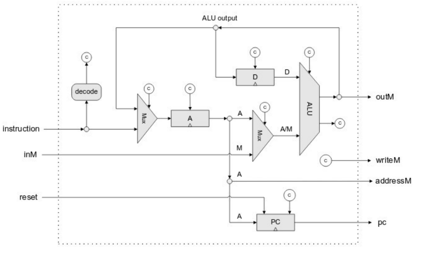
instruction:prende l'istruzione
reset:fa il reset del program counter e fa ricomiciare il programma dall'inizio
outM:è un bus che va in memoria
Un registro D che contiene uno dei due operandi della ALU, e che può memorizzare un precedente output
Un registro A che può contenere un dato che fa parte delle istruzioni o un precedente output
Il secondo input della ALU può essere o il contenuto del registro A oppure un dato proveniente dalla memoria
E’ presente anche il Program Counter che, per quanto riguarda i salti, può essere impostato tramite il registro A
Il registro A può essere anche usato come puntatore alla memoria (per operazioni di lettura/scrittura)
Il flusso dei dati fra i vari componenti viene controllato tramite Mux
I Mux ed i bit di controllo dei registri, vengono gestiti da una microarchitettura composta da semplici circuiti combinatori
Infatti, l’intero ciclo Fetch-Decode-Execute del processore Hack viene eseguito in un solo ciclo di clock, ed i segnali di controllo sono funzione dell’istruzione corrente
Il decode setta i c bit che vengono utilizzati come control bit per tutti gli altri componenti
Le SRAM (Static RAM) sono realizzate tramite flip-flop come le memorie viste in precedenza - Veloci (ordine del nanosecondo) - Usate principalmente per le cache
Le DRAM (Dynamic RAM) o SDRAM (Synchronous DRAM), usate per le memorie centrali, hanno un solo transistor ed un condensatore che mantiene (tramite carica elettrica) un singolo bit
-Visto che il condensatore perde la propria carica, deve essere ricaricato per evitare di perdere la propria informazione - Si rendono necessarie periodiche fasi di “refresh” (ad intervalli dell’ordine del millisecondo) - A causa del refresh sono più lente (ordine della decina di nanosecondi) - Richiedendo un solo transistor costano meno e possono essere maggiormente miniaturizzate
La cache memorizza gli ultimi dati utilizzati dalla cpu, e se la cpu deve accedere dati che ha richiesto da poco la cache restituisce i dati molto velocemente evitando di andarli a riprendere dalla memoria .
I linguaggi di programmazione sono fatti per utilizzare la cache,ma non la si può controllare.
Modello Cache di studio: - Una prima piccola cache (livello 1: L1) è direttamente nel chip della CPU separata fra istruzioni e dati (dimensioni fra 16-64 KB) - Una seconda cache (livello 2: L2) nel medesimo “involucro” della CPU “unificata” fra dati e istruzioni (fra 512 KB ed 1 MB) - Una terza cache (livello 3: L3) esterna alla CPU (alcuni MB)
La cache è suddivisa in n righe ognuna che contiene m byte.
Si procede suddividendo la memoria in blocchi da m byte e il blocco i andrà nella riga i mod n, la cache tiene traccia anche di quale specifico blocco contiene la linea.
esempio
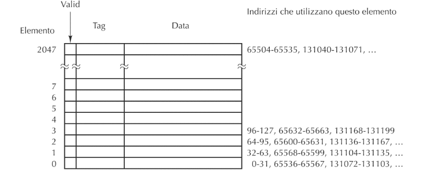
Immaginiamo ora una cache con n=2048 linee di dimensione m=32 byte: - Valid: indica se la linea di cache contiene un blocco, (all'inizio tutti i valid sono a false e data e tag hanno valori randomizzi) - Data: contiene i 32 byte del blocco - Tag: indica esattamente quale blocco è contenuto
quindi se abbiamo un indirizzi da 32 bit: - primi 5: (meno significativi) indicano quale byte dei 32 byte stiamo cercando - i successivi 11: indicano quale linea della cache (211=2048) - i rimanenti 16: quale tra gli indirizzi che utilizzano quel blocco
TODO:
Nell’architettura del nostro calcolatore Hack, consideriamo due distinti ingressi per la CPU: - “instruction”: carica l’istruzione da eseguire da una specifica memoria programma - inM: carica i dati necessari da una distinta memoria dati
Nelle architetture usuali (Von Neumann) dati e programmi risiedono nella stessa memoria
Instruction Set Architeture:(rappresenta l'interfaccia fra l'hardware e il software) sono la serie di istruzioni che il processore esegue
Tipi di Istruzioni:
A-instruction: @valore //A <- valore
C-Instruction: dist= comp;jump (dist = e jump sono opzionali)
comp = 0 , 1 , -1 , D , A , !D , !A , -D , -A , D+1 , A+1 , D-1, A-1 , D+A , D-A , A-D , D&A , D|A , M , !M , -M ,M+1, M-1 , D+M , D-M , M-D , D&M , D|M dest = M , D , MD , A , AM , AD , AMD, o nullo (in questo caso viene omesso) jump = JGT , JEQ , JGE , JLT , JNE , JLE , JMP, o nullo (omesso)
memoria[2]=memoria[1]-memoria[0]-2
memoria[2]=memoria[1]-memoria[0]-2
(XXX) che definisce il simbolo XXX che farà riferimento all’indirizzo di ROM dell’istruzione successiva alla dichiarazioneSCREEN e KBD che fanno riferimento agli indirizzi RAM 16384 e 24576 (indicano rispettivamente l’inizio della memoria per gestire lo schermo e la locazione dove viene inserito il tasto premuto )Tastiera è una memoria ROM in solo lettura
Lo Schermo è come una memoria ram, tutto quello che vieine scritto su questa memoria appare nella schermo del simulatore.
Lo schermo è diviso in colonne e righe
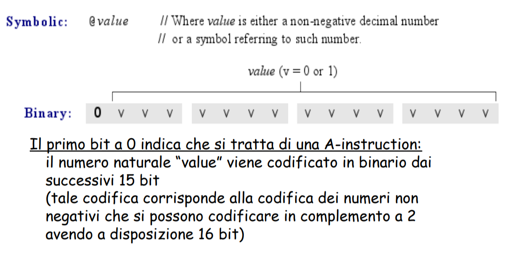
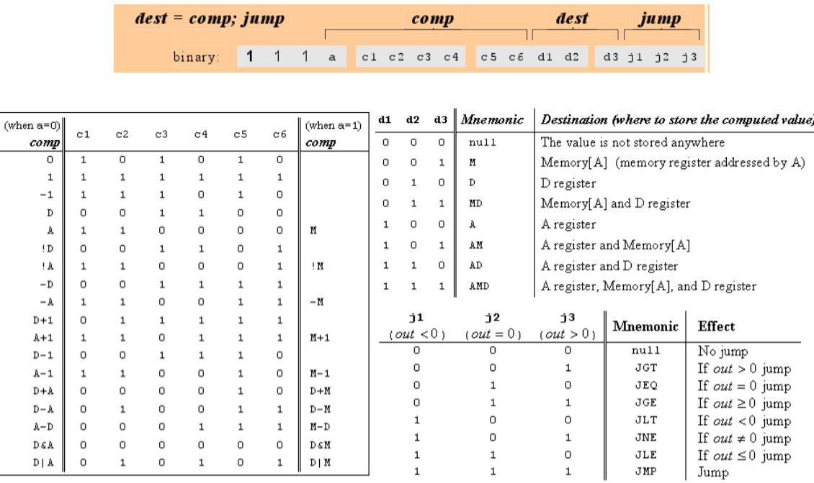
ISA è l'interfaccia tra l'hardware e il software, i compilatori traucono i programmi in instruzioni livello ISA
In generale le istruzioni sono divise in: - codice operativo: parte che indica il tipo di istruzione da eseguire - indirizzi: indicano gli operatori da utilizzare
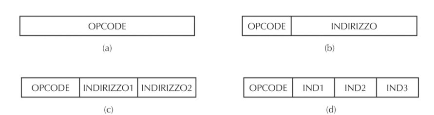
Gli indirizzamento: - Indirizzamento immediato: L’istruzione include già l’operando da usare (vedi A-instruction del linguaggio Hack) - Indirizzamento diretto: L’istruzione contiene l’indirizzo completo in memoria della cella in cui reperire l’operando - Indirizzamento a registro: L’operando viene prelevato da un registro - Indirizzamento a registro indiretto: L’operando viene prelevato dalla memoria, all’indirizzo puntato da un registro (vedi l’accesso in memoria del linguaggio Hack, con “indirizzamento a registro indiretto” tramite registro A)
Indirizzamoento a stack: i processori hanno delle istruzioni per gestire lo stack, come push, pop + dei registri dedicati BSP ..
Tipiche istruzioni: - operandi di trasfermiento dati: È trasferiscono dati da memoria a registri e viceversa e da registri a registri - operazioni aritmetico-logiche: Operazioni su interi e floating-point - operazioni unairie: (prendono un solo operatore) per esempio le instruzioni shift o inc - salti: condizionati e non - alcuni compilatori hanno